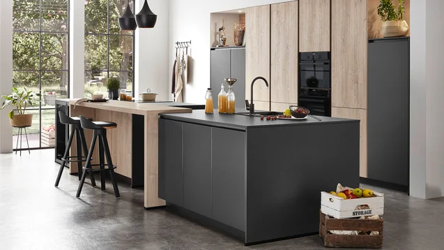

Консультация и замер
Обсуждаем задачи и пожелания, уточняем размеры.

KÜCHEN TECHNIK × NOBILIA · АЛМАТЫ
Кухни Nobilia под ваше пространство.
От индивидуального проекта до установки.
Мебель Nobilia из Германии
Под вашу планировку и ритм жизни
Условия — в документах заказа
Материалы, которые можно ощутить
01 / КОЛЛЕКЦИИ NOBILIA
Найдите близкий вам характер.
Планировку, материалы и наполнение
подберём для вашего пространства.

02 / НЕМЕЦКАЯ ТОЧНОСТЬ. ЛИЧНЫЙ ПОДХОД.
Nobilia производит мебель в Германии с 1945 года. За лаконичными фасадами — система, в которой каждая деталь на своём месте.
Мы помогаем сделать эту систему вашей: продумываем планировку и хранение, подбираем материалы и технику, организуем поставку и установку в Алматы.
03 / МАТЕРИАЛЫ И НАСТРОЕНИЕ
Светлые фасады, выразительные фактуры,
спокойные природные оттенки.
Начните с того, что близко вам.

Мягкий белый, естественный свет и ощущение простора. Простая основа для жизни, наполненной деталями.
Это подбор настроения, а не точная спецификация материалов. Оттенки и фактуры рекомендуем посмотреть в шоуруме.
Матовые поверхности, древесные и каменные фактуры. Сравним образцы при разном освещении и найдём сочетание для вашего интерьера.
04 / ОТ ИДЕИ ДО УСТАНОВКИ
Шесть понятных шагов.
Сопровождаем вас на каждом этапе.

RIVA 842 · пример решения Nobilia
Обсудить мой проектОбсуждаем задачи и пожелания, уточняем размеры.
Продумываем планировку, материалы, хранение и технику.
Уточняем комплектацию, стоимость и условия заказа.
Передаём согласованный проект на фабрику Nobilia.
Организуем поставку и согласуем дату монтажа.
Устанавливаем мебель и передаём готовую кухню.
Сроки зависят от проекта и поставки. Индивидуальный график согласуем при заказе.
05 / ЦЕЛОСТНОЕ РЕШЕНИЕ
Поможем подобрать технику и учесть её в планировке: размеры, размещение и удобство ежедневного использования.
06 / ЗА ПРЕДЕЛАМИ КУХНИ
Обсудим мебель и системы хранения,
которые поддержат общий стиль дома.
Мебель в ритме вашего интерьера
Продуманный порядок каждый день
Обсудим возможности для каждой комнаты
07 / УВЕРЕННОСТЬ В РЕЗУЛЬТАТЕ
Условия гарантии — в документах заказа.
Планировка, материалы и комплектация определяются до заказа.
Организуем и сопровождаем согласованные этапы проекта.
Порядок обращения — в документах заказа. Для техники возможны отдельные условия.

Материалы NobiliaНа фото — коллекция производителя, не шоурум Küchen Technik.
08 / ВСТРЕТИМСЯ В АЛМАТЫ
Увидеть оттенок при дневном свете. Прикоснуться к фактуре. Рассмотреть детали. И обсудить вашу будущую кухню с дизайнером.
Адрес и график появятся после подтверждения салоном.
Свяжемся с вами, чтобы согласовать удобное время.
Приём заявок пока не подключён.
Стоимость зависит от планировки, материалов, наполнения и техники. Рассчитаем её после обсуждения вашей задачи и комплектации.
Мебель Nobilia производится в Германии. Küchen Technik сопровождает проект, поставку в Казахстан и установку.
Срок складывается из проектирования, согласования, производства, доставки и монтажа. График конкретного заказа уточняется при оформлении.
Обсудим ваш проект и проверим, как реализовать его в системе Nobilia: планировку, материалы, наполнение и интеграцию техники.
Состав заказа и услуг зависит от проекта. Мебель, техника, проектирование, доставка и монтаж отражаются в согласованном предложении. Условия замера и дополнительных работ уточняются отдельно.
3D-проектирование — отдельная услуга. Её условия, а также условия консультации и замера обсудим до начала работы.
По условиям Küchen Technik предусмотрена гарантия 5 лет. Подробный состав гарантийных обязательств и порядок обращения уточняются в документах заказа. Техника может иметь отдельные условия.
СЛЕДУЮЩИЙ ШАГ — ВАШ
Начнём с разговора о вашем пространстве,
материалах и комплектации.